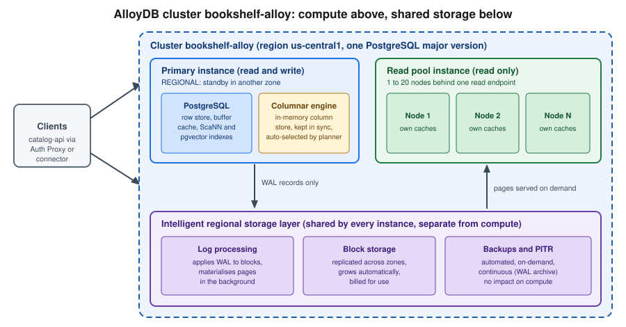

AlloyDB for PostgreSQL
|
This content was generated with the assistance of AI and should be verified against the official documentation before being relied on in production. |
Examples on this page target the gcloud CLI 586 (release 586.0.0 of 2026-09-22) and the AlloyDB Admin API, checked on
2026-10-01. At that date PostgreSQL 17 is the default major version for new clusters and PostgreSQL 18 is generally
available (since 2026-03-25); the --database-version flag accepts POSTGRES_14 to POSTGRES_18. AlloyDB for PostgreSQL
is Google’s PostgreSQL-compatible managed database for workloads that outgrow Cloud SQL: it keeps the PostgreSQL wire
protocol, extensions and SQL, but replaces the storage layer with a log-based, regional storage service, adds an
in-memory columnar engine for analytical queries, supports read pool instances for horizontal read scaling, and ships
AI features such as the ScaNN vector index. In the Bookshelf scenario (described in
the section introduction) the catalog database starts on Cloud SQL
(Cloud SQL); this page builds the scale-up variant, an AlloyDB cluster named
bookshelf-alloy, for the day catalog-api needs more read throughput, faster reporting queries and vector search over
book descriptions. my-project-id and us-central1 are placeholders, and passwords are always read from an environment
variable or from Secret Manager, never typed into a file.

What AlloyDB adds over Cloud SQL for PostgreSQL
Both services run community PostgreSQL semantics, so applications, drivers, ORMs and most extensions move between them without code changes. The differences are in the engine around PostgreSQL:
-
Disaggregated storage. Compute nodes ship only write-ahead log (WAL) records to a regional storage layer that applies them to blocks in the background, replicates across zones and grows automatically. Failover, backups and replicas do not copy data between disks, which is why read pools can be added in minutes and why backups do not slow the primary.
-
Columnar engine. An optional in-memory column store, kept transactionally consistent with the row store, that the query planner uses automatically for scans, filters and aggregations. It targets mixed (HTAP) workloads where reporting queries run next to transactions.
-
Read pool instances. A managed set of 1 to 20 read-only nodes behind a single endpoint, scaled independently of the primary.
-
Availability. Regional (high availability) primaries carry a 99.99% availability SLA, including maintenance, on the terms in the current service level agreement.
-
AI features. The
google_ml_integrationextension (calling Vertex AI models from SQL, automatic embeddings, AI functions),pgvector, and the ScaNN index for approximate nearest neighbour search at large scale. -
Operations. Managed connection pooling, continuous backup with point-in-time recovery, cross-region secondary clusters, Query Insights, an index advisor and a columnar-engine recommender.
When to choose AlloyDB or Cloud SQL
| Concern | Cloud SQL for PostgreSQL | AlloyDB for PostgreSQL |
|---|---|---|
Typical size and load |
Small to large transactional databases, development and test |
Large or fast-growing transactional databases, mixed analytical and transactional workloads, read-heavy services |
Read scaling |
Read replicas, each with its own copy of the data |
Read pool instances sharing the primary’s storage; no data copy |
Analytical queries on live data |
Standard PostgreSQL plans only |
Columnar engine accelerates scans and aggregations |
Vector search |
|
|
Availability model |
Optional regional HA, SLA depends on edition |
Regional primaries with the 99.99% SLA, storage replicated across zones |
Engines offered |
PostgreSQL, MySQL and SQL Server |
PostgreSQL only |
Run it elsewhere |
No |
AlloyDB Omni on your own hardware, other clouds or a laptop |
Cost shape |
Lowest entry price, shared-core tiers, 30-day free trial instance |
Dedicated vCPU and memory per instance plus storage; 30-day free trial cluster |
A practical rule: start on Cloud SQL, and move to AlloyDB when read replicas multiply, reporting queries compete with
transactions, the vector workload outgrows pgvector defaults, or the availability target needs the higher SLA. The
move is a standard PostgreSQL migration with Database Migration Service or a logical dump (see
Managed Databases on Google Cloud); for the engine itself see the site’s SQL reference starting
at SQL Reference. The AWS counterpart is Aurora (Amazon Aurora).
Concepts
| Term | Meaning |
|---|---|
Cluster |
The top-level resource: one PostgreSQL database system with its storage, backups and one primary instance. Created in a region with an initial |
Primary instance |
The single read/write instance of a cluster, |
Read pool instance |
A group of read-only nodes sharing the cluster’s storage, reached through one read endpoint. |
Secondary cluster |
A read-only copy of a primary cluster in another region, used for disaster recovery and read locality; can be promoted. |
Machine configuration |
vCPU count (2 to 128 on the highmem series) with a fixed memory ratio of 8 GB per vCPU, or a named machine type on newer processor series. |
Backup |
An automated or on-demand snapshot of the cluster. Continuous backup adds WAL archiving for point-in-time recovery. |
Network access |
Either Private Services Access (a peered VPC range) or Private Service Connect (a consumer endpoint in your VPC). |
The AlloyDB Admin API is alloydb.googleapis.com. Instances do not have a public IP unless you explicitly enable
public IP on an instance; the default and recommended path is private connectivity.
Roles and permissions
| Role | Grants |
|---|---|
|
Full control of clusters, instances, backups and users; for platform administrators |
|
Connect through the Auth Proxy or a language connector ( |
|
Read-only access to clusters, instances and backups |
|
Log in to the database with IAM database authentication and have the privileges granted to that database user |
|
Required by the Auth Proxy to call the API in a project, in addition to |
The catalog-api workload runs as a dedicated service account (see Identity and Access).
It receives roles/alloydb.client, roles/alloydb.databaseUser and roles/serviceusage.serviceUsageConsumer on the
project, and nothing broader. Downloaded service-account keys are not needed: Cloud Run, Compute Engine and GKE attach a
service account to the workload and the connector uses Application Default Credentials. See
AlloyDB IAM roles and permissions.
Free trial cluster
New customers and existing customers who have not yet used it can create a 30-day free trial cluster: a cluster with a
single primary instance of limited size and storage, with no charge during the trial. Choose Free trial cluster when
creating a cluster in the console, or pass --subscription-type=TRIAL on the CLI. At the end of the trial the cluster is
upgraded to a standard cluster (billing starts) or deleted, depending on your choice, and the trial is not available for
every organisation or region, so confirm the terms on the
free trial page before relying on it. Trial clusters are
meant for evaluation, not for production data.
Prerequisites: network and API
An AlloyDB cluster is reachable only from private addresses, so decide the connectivity model before creating it.
Private Services Access
Private Services Access (PSA) peers your VPC network with a Google-managed service network using an allocated IP range. It is the long-established option and works with the console’s default flow.
gcloud services enable alloydb.googleapis.com compute.googleapis.com \
servicenetworking.googleapis.com
export PROJECT_ID=$(gcloud config get-value project)
export REGION=us-central1
export NETWORK=default
# Reserve a range for Google-managed services and create the peering (once per VPC)
gcloud compute addresses create google-managed-services-$NETWORK \
--global \
--purpose=VPC_PEERING \
--prefix-length=16 \
--network="$NETWORK"
gcloud services vpc-peerings connect \
--service=servicenetworking.googleapis.com \
--ranges=google-managed-services-$NETWORK \
--network="$NETWORK"See gcloud compute addresses create,
gcloud services vpc-peerings connect
and Configure Private Services Access.
The same peering is shared with Cloud SQL private IP and Memorystore, so an existing range can usually be reused. Size
the range for growth: every cluster, and every read pool, consumes addresses from it.
Private Service Connect
Private Service Connect (PSC) gives each instance a service attachment, and you create a forwarding rule with an
internal IP address in whichever VPC network and project should reach it. There is no VPC peering, ranges do not
overlap, and one instance can be reached from several networks and projects. It is the better fit for shared VPC, multiple
consumer projects and overlapping address spaces. You choose PSC when creating the cluster with
--enable-private-service-connect, and the instance later lists the consumer projects it allows
(--allowed-psc-projects) and the service attachment to target. The Auth Proxy and language connectors can connect over
PSC by using the --psc option or the PSC lookup type.
See About Private Service Connect for AlloyDB and VPC Networking on Google Cloud for the network side.
Creating a cluster and primary instance
In the Google Cloud console
-
Select the project in the project picker at the top of the console. Open AlloyDB for PostgreSQL from the navigation menu or search bar; the first visit offers to enable the AlloyDB API, and also Compute Engine and Service Networking if they are off. Cloud Shell has
gcloudready if you prefer commands. -
Choose Create a cluster. For a free trial choose Free trial cluster, otherwise Highly available (primary with standby, read pools possible) or Basic (single zone, no read pools, for development).
-
Enter the Cluster ID
bookshelf-alloyand the Instance IDbookshelf-alloy-primary. -
Enter the password for the
postgresuser. Use a generated value and store it in Secret Manager straight away (see Secret Manager and Cloud KMS); the console does not show it again. -
Choose the Region
us-central1and the PostgreSQL version (17 or 18). -
Under Network, choose the VPC network and an allocated range for Private Services Access, or choose Private Service Connect and list the consumer projects that may connect.
-
Under Configure your primary instance, pick the Machine type (vCPU and memory) and, under Advanced configuration options, any Flags (for example
google_columnar_engine.enabled=on), Maintenance window and Data protection (automated and continuous backup, encryption with a customer-managed key). -
Choose Create cluster. The cluster and instance usually take several minutes to become Ready.
-
Open the instance’s Overview to find the private IP address (or the PSC service attachment) and the connection name
projects/PROJECT/locations/REGION/clusters/CLUSTER/instances/INSTANCE, used by the Auth Proxy and the connectors.
With the gcloud CLI
export CLUSTER=bookshelf-alloy
export INSTANCE=bookshelf-alloy-primary
# Read the postgres password from a secret and keep it out of shell history
export DB_PASSWORD=$(gcloud secrets versions access latest --secret=catalog-db-password)
# Cluster on Private Services Access, continuous backup and PostgreSQL 17
gcloud alloydb clusters create "$CLUSTER" \
--region="$REGION" \
--network="projects/$PROJECT_ID/global/networks/$NETWORK" \
--allocated-ip-range-name=google-managed-services-$NETWORK \
--database-version=POSTGRES_17 \
--password="$DB_PASSWORD" \
--enable-continuous-backup \
--continuous-backup-recovery-window-days=14
# Regional (highly available) primary instance with 4 vCPU
gcloud alloydb instances create "$INSTANCE" \
--cluster="$CLUSTER" \
--region="$REGION" \
--instance-type=PRIMARY \
--cpu-count=4 \
--availability-type=REGIONAL \
--database-flags=google_columnar_engine.enabled=on
gcloud alloydb instances describe "$INSTANCE" \
--cluster="$CLUSTER" --region="$REGION" \
--format="value(ipAddress,name)"See gcloud alloydb clusters create,
gcloud alloydb instances create and
Create a cluster and its primary instance. The first
instance creation can take ten minutes or more; add --async to return immediately and poll with
gcloud alloydb operations list --region="$REGION".
For Private Service Connect create the cluster with --enable-private-service-connect instead of --network, and the
instance with --allowed-psc-projects="$PROJECT_ID"; for a free trial cluster add --subscription-type=TRIAL and
use --cpu-count=2. See Create a cluster with Private Service
Connect.
Terraform
resource "google_alloydb_cluster" "bookshelf" {
cluster_id = "bookshelf-alloy"
location = "us-central1"
database_version = "POSTGRES_17"
network_config {
network = "projects/my-project-id/global/networks/default"
allocated_ip_range = "google-managed-services-default"
}
initial_user {
user = "postgres"
password = var.db_password # sensitive variable, supplied from a secret
}
continuous_backup_config {
enabled = true
recovery_window_days = 14
}
}
resource "google_alloydb_instance" "primary" {
cluster = google_alloydb_cluster.bookshelf.name
instance_id = "bookshelf-alloy-primary"
instance_type = "PRIMARY"
machine_config {
cpu_count = 4
}
availability_type = "REGIONAL"
database_flags = {
"google_columnar_engine.enabled" = "on"
}
}See the Terraform
google_alloydb_cluster
and google_alloydb_instance
resources, and Infrastructure as Code for the provider setup. Mark the password variable
sensitive = true, and remember it ends up in the Terraform state file, so keep that state in a protected bucket.
Configuration options
| Option | Notes |
|---|---|
Database version |
|
Availability type |
|
Machine type |
vCPU count with a fixed memory ratio. Newer processor series (for example C4A Axion-based machine types, selected with |
Database flags |
PostgreSQL parameters and AlloyDB flags ( |
SSL mode |
|
Maintenance window |
A weekly preferred day and hour; deny periods can postpone maintenance. Regional instances are updated with minimal downtime. |
Encryption |
Google-managed by default; a customer-managed Cloud KMS key (CMEK) can be set at cluster creation and cannot be changed afterwards. |
Labels and tags |
Labels for billing reports; resource tags for conditional IAM and organisation policies. |
Connection pooling |
Managed connection pooling per instance (see Managed connection pooling). |
Public IP |
Optional, off by default; restrict it with authorised networks if used at all. |
Connecting
The AlloyDB Auth Proxy
The AlloyDB Auth Proxy is a small client that opens an authenticated, encrypted connection to the instance using IAM, so
no IP allow-lists or client certificates are managed by hand. It listens on a local port (5432 by default) and the
application connects to 127.0.0.1 as if PostgreSQL were local. It needs a network path to the instance (the same VPC,
a peered network, or a VPN) and roles/alloydb.client.
# Download from the official release page (see the link below), then:
./alloydb-auth-proxy \
"projects/$PROJECT_ID/locations/$REGION/clusters/$CLUSTER/instances/$INSTANCE" \
--port=5432
# In another terminal; use IAM authentication instead of a password
psql "host=127.0.0.1 port=5432 dbname=postgres user=postgres sslmode=disable"The proxy encrypts the connection itself, so sslmode=disable on the loopback connection is correct. Add --psc for a
PSC instance, --auto-iam-authn to log in with the proxy’s IAM identity, and --public-ip for an instance with a
public address. On Compute Engine the VM’s service account is used; on a laptop run
gcloud auth application-default login, or impersonate the application service account with
--impersonate-service-account.
See Connect using the AlloyDB Auth Proxy and the Auth Proxy repository for downloads and the current flags. For quick checks without a proxy, the console offers AlloyDB Studio (an in-browser SQL editor under the instance’s AlloyDB Studio menu).
Language connectors
The AlloyDB language connectors embed the proxy logic in your application, which removes the sidecar process. Java, Python, Go and Node.js connectors exist. The Java connector provides a JDBC socket factory:
<dependency>
<groupId>com.google.cloud</groupId>
<artifactId>alloydb-jdbc-connector</artifactId>
<version>${alloydb-jdbc-connector.version}</version>
</dependency>
<dependency>
<groupId>org.postgresql</groupId>
<artifactId>postgresql</artifactId>
</dependency># application.properties of catalog-api (Spring Boot, package com.example.bookshelf)
spring.datasource.url=jdbc:postgresql:///catalog\
?alloydbInstanceName=projects/my-project-id/locations/us-central1/clusters/bookshelf-alloy/instances/bookshelf-alloy-primary\
&socketFactory=com.google.cloud.alloydb.SocketFactory\
&alloydbEnableIAMAuth=true
spring.datasource.username=catalog-api-sa@my-project-id.iam
spring.datasource.hikari.maximum-pool-size=10Pin the connector version in your dependency management (the placeholder above stands for the version listed in the
repository’s release page). For PSC instances add alloydbIpType=PSC; for public instances alloydbIpType=PUBLIC.
With alloydbEnableIAMAuth=true the connector requests a short-lived OAuth token and uses it as the database password,
so the file contains no password at all. With built-in authentication instead, set
spring.datasource.username=catalog_app and spring.datasource.password=${DB_PASSWORD}, where DB_PASSWORD is injected
from Secret Manager (see Runtime Configuration and
Configuration and Profiles).
Choosing a connection method
Cloud Run reaches the instance’s private address through direct VPC egress (see
Cloud Run), unlike Cloud SQL there is no --add-cloudsql-instances shortcut. GKE pods
connect from inside the VPC, authenticating with Workload Identity Federation for GKE
(Deploying Microservices on GKE).
IAM database authentication
IAM authentication lets users and service accounts log in with their Google identity instead of a password. Create the
database user once, grant it privileges in SQL, and connect with the connector or --auto-iam-authn.
# IAM user for the catalog-api service account (the name omits ".gserviceaccount.com")
gcloud alloydb users create "catalog-api-sa@$PROJECT_ID.iam" \
--cluster="$CLUSTER" --region="$REGION" \
--type=IAM_BASED
# Allow the service account to log in and connect
gcloud projects add-iam-policy-binding "$PROJECT_ID" \
--member="serviceAccount:catalog-api-sa@$PROJECT_ID.iam.gserviceaccount.com" \
--role=roles/alloydb.databaseUser
gcloud projects add-iam-policy-binding "$PROJECT_ID" \
--member="serviceAccount:catalog-api-sa@$PROJECT_ID.iam.gserviceaccount.com" \
--role=roles/alloydb.clientThen grant table privileges as an administrator:
GRANT CONNECT ON DATABASE catalog TO "catalog-api-sa@my-project-id.iam";
GRANT USAGE ON SCHEMA public TO "catalog-api-sa@my-project-id.iam";
GRANT SELECT, INSERT, UPDATE, DELETE ON ALL TABLES IN SCHEMA public
TO "catalog-api-sa@my-project-id.iam";Built-in users are created with gcloud alloydb users create NAME --type=BUILT_IN --password=… or with
CREATE ROLE in SQL, and the postgres superuser password can be reset with gcloud alloydb users set-password. See
Manage IAM authentication,
gcloud alloydb users create and
Data Control Language (DCL) for GRANT semantics.
Managed connection pooling
PostgreSQL forks a process per connection, so hundreds of short-lived clients (many Cloud Run instances, each with its
own pool) can exhaust max_connections. AlloyDB offers a managed PgBouncer-based pooler per instance, listening on port
6432 of the same address. Applications connect to that port; the instance multiplexes them onto fewer server
connections.
gcloud alloydb instances update "$INSTANCE" \
--cluster="$CLUSTER" --region="$REGION" \
--enable-connection-pooling \
--connection-pooling-pool-mode=TRANSACTION \
--connection-pooling-max-pool-size=50Transaction mode returns the server connection after each transaction, which gives the best multiplexing but breaks
session state such as prepared statements, advisory locks and SET without LOCAL; session mode keeps those. See
Configure managed connection pooling
and the flags of
gcloud alloydb instances update.
Creating the Bookshelf schema
Connect through the Auth Proxy and create the database, extensions and a small catalog table that later sections reuse.
CREATE DATABASE catalog;
\c catalog
CREATE EXTENSION IF NOT EXISTS vector;
CREATE EXTENSION IF NOT EXISTS alloydb_scann;
CREATE EXTENSION IF NOT EXISTS google_columnar_engine;
CREATE EXTENSION IF NOT EXISTS google_ml_integration;
CREATE TABLE books (
id bigserial PRIMARY KEY,
isbn text NOT NULL UNIQUE,
title text NOT NULL,
author text NOT NULL,
published date,
price_cents integer NOT NULL,
description text,
embedding vector(768)
);
CREATE TABLE order_lines (
order_id bigint NOT NULL,
book_id bigint NOT NULL REFERENCES books(id),
quantity integer NOT NULL,
ordered_at timestamptz NOT NULL DEFAULT now(),
PRIMARY KEY (order_id, book_id)
);See Supported database extensions for the list of
extensions per version. The postgres superuser in AlloyDB is not a full PostgreSQL superuser: it has the
alloydbsuperuser role, which is sufficient for the extensions above.
The columnar engine
The columnar engine keeps a copy of selected table columns in memory in a compressed column-oriented layout, and the planner chooses it automatically when a query scans many rows and touches few columns. The copy is maintained as rows change, so results are always consistent with the row store. It is most useful for aggregations over large tables, such as the nightly sales report in the Bookshelf scenario, and does little for primary-key lookups.
Enabling and sizing
gcloud alloydb instances update "$INSTANCE" \
--cluster="$CLUSTER" --region="$REGION" \
--database-flags=google_columnar_engine.enabled=on,google_columnar_engine.memory_size_in_mb=2048By default the engine uses a share of the instance’s memory (and a configured size can be set with
google_columnar_engine.memory_size_in_mb); a restart is needed when turning the flag on or changing the size. Some
AlloyDB versions can use auto-columnarization, where the engine chooses columns and refreshes itself in the
background (google_columnar_engine.enable_auto_columnarization), so manual curation is optional.
Adding columns manually and using the recommender
-- Load specific columns of a table into the columnar store
SELECT google_columnar_engine_add('order_lines', 'book_id, quantity, ordered_at');
-- Ask the recommender which columns would help for the recent workload, then apply them
SELECT google_columnar_engine_recommend();
-- See what is in the columnar store and how much memory it uses
SELECT * FROM g_columnar_relations;
-- A typical analytical query; EXPLAIN shows "Columnar Scan" when it is used
EXPLAIN (ANALYZE, COSTS OFF)
SELECT book_id, sum(quantity) AS sold
FROM order_lines
WHERE ordered_at >= now() - interval '30 days'
GROUP BY book_id
ORDER BY sold DESC
LIMIT 20;Function and view names are listed in Configure the columnar engine; they have changed across versions, so check the page for your PostgreSQL major. See also About the columnar engine. Columnar data lives in memory and is rebuilt after a restart, and the engine competes with the shared buffer cache, so size the instance for both. The index advisor and Query Insights (under Query insights in the console) show which queries are good candidates.
Read pool instances
A read pool is a second instance in the same cluster, of type READ_POOL, with 1 to 20 nodes, each running its own
PostgreSQL and buffer cache over the shared storage. Clients connect to one read pool endpoint (a private IP or a
PSC attachment) and connections are load-balanced across the nodes. Replica lag is typically small because there is no
data copy: reads see changes after the WAL is applied to storage, and the pool still serves possibly slightly stale
data, so read-your-writes after a write must go to the primary. You can have several read pools in one cluster, for
example one for the application and a bigger one with the columnar engine for reporting.
In the Google Cloud console
-
Open AlloyDB for PostgreSQL and select the cluster
bookshelf-alloy. -
Choose Add read pool instance.
-
Enter the Instance ID
bookshelf-alloy-reads, choose the Machine type and the Number of nodes (start with 2). -
Optionally set flags such as
google_columnar_engine.enabled=onfor this pool alone. -
Choose Create read pool instance and wait until it is Ready.
-
Open the pool’s Overview for the read endpoint address.
With the gcloud CLI
gcloud alloydb instances create bookshelf-alloy-reads \
--cluster="$CLUSTER" \
--region="$REGION" \
--instance-type=READ_POOL \
--cpu-count=4 \
--read-pool-node-count=2 \
--database-flags=google_columnar_engine.enabled=on
# Add capacity later without downtime
gcloud alloydb instances update bookshelf-alloy-reads \
--cluster="$CLUSTER" --region="$REGION" \
--read-pool-node-count=4See Create a read pool instance and
Scale a read pool. catalog-api keeps two
datasources: writes go to the primary endpoint and GET queries for catalog browsing go to the read pool endpoint.
In Spring, route them with AbstractRoutingDataSource or two DataSource beans marked @Primary and @Qualifier
respectively, as described in Configuration and Profiles. Read pools are not a failover
target; high availability for writes comes from the primary’s REGIONAL standby.
Vector search with ScaNN
AlloyDB supports the pgvector extension, including its HNSW and IVFFlat indexes (see
PostgreSQL & pgvector), and adds the ScaNN index (Scalable Nearest Neighbors), the
algorithm that Google uses for its own search and recommendation systems. ScaNN builds a tree of quantised partitions
with a compact in-memory representation, which gives faster index builds, much smaller indexes and higher query
throughput than HNSW on large vector sets, and lets filters combine with the vector search. Concepts such as recall
versus speed are explained in ANN Indexes: Flat, IVF, HNSW and Beyond; a cross-product view is in
Comparing Vector Databases.
Embeddings from SQL
The google_ml_integration extension registers Vertex AI models, so embeddings can be generated without leaving SQL.
The instance’s service agent needs roles/aiplatform.user.
gcloud projects add-iam-policy-binding "$PROJECT_ID" \
--member="serviceAccount:service-<project-number>@gcp-sa-alloydb.iam.gserviceaccount.com" \
--role=roles/aiplatform.user-- One-off: embed every description (text embedding model served by Vertex AI)
UPDATE books
SET embedding = embedding('gemini-embedding-001', description)::vector
WHERE description IS NOT NULL AND embedding IS NULL;Model names, dimensions and the signature of the embedding function vary by version; confirm them on
Work with vector embeddings. Newer versions can also
maintain embeddings automatically when rows change (auto embeddings) and expose AI functions such as ai.if,
ai.rank and ai.generate to filter or rank rows with a model; see the
AlloyDB AI documentation for their current launch stage. Embeddings can
also be created in the application with the Vertex AI client and inserted as vector values; match the dimension of
the column to the model.
Creating a ScaNN index and querying
CREATE INDEX books_embedding_scann
ON books
USING scann (embedding cosine)
WITH (num_leaves = 1000, quantizer = 'sq8');
-- Optional: tune accuracy per session
SET scann.num_leaves_to_search = 20;
SELECT id, title
FROM books
ORDER BY embedding <=> embedding('gemini-embedding-001', 'novels about sailing')::vector
LIMIT 10;num_leaves is roughly the square root of the row count as a starting point; more leaves searched means better
recall and slower queries. Newer versions also offer an automatic index mode, where the index parameters are chosen for
you. Distance operators follow pgvector (<⇒ cosine, <→ Euclidean, <#> inner product). Choose HNSW when the set
is small and you want the most familiar behaviour, and ScaNN when the set has many millions of vectors, memory is tight
or index build time matters. See Store, index
and query vectors and Tune vector indexes.
Backups and recovery
AlloyDB protects data in three layers, all stored outside the instances so they never affect compute.
| Mechanism | Behaviour |
|---|---|
Automated backups |
Enabled by default: a daily snapshot, by default kept for 14 days (configurable by count or period, start window and days of week). |
On-demand backups |
Taken any time with a name; kept until you delete them, including after the cluster is deleted. |
Continuous backup and PITR |
WAL archiving that allows restoring the cluster to any second inside a recovery window of 1 to 35 days (14 by default). |
In the Google Cloud console
-
Open the cluster and choose Data protection (or Backups under Backup and restore).
-
To back up now choose Create backup, enter
bookshelf-alloy-manual-1and Create. -
To change the schedule choose Edit on the automated backup policy and set the Start time, Days, retention and an optional customer-managed key.
-
To restore choose Restore on a backup, or Restore to point in time on the cluster, enter a new cluster ID and the network, then Restore. Restores always create a new cluster.
With the gcloud CLI
# On-demand backup
gcloud alloydb backups create bookshelf-alloy-manual-1 \
--cluster="$CLUSTER" --region="$REGION"
# Automated backup policy: nightly at 02:00 UTC, keep 14
gcloud alloydb clusters update "$CLUSTER" \
--region="$REGION" \
--automated-backup-start-times=02:00 \
--automated-backup-retention-count=14
# Restore a backup into a new cluster
gcloud alloydb clusters restore bookshelf-alloy-restored \
--region="$REGION" \
--backup="projects/$PROJECT_ID/locations/$REGION/backups/bookshelf-alloy-manual-1" \
--network="projects/$PROJECT_ID/global/networks/$NETWORK"
# Point-in-time recovery into a new cluster
gcloud alloydb clusters restore bookshelf-alloy-pitr \
--region="$REGION" \
--source-cluster="projects/$PROJECT_ID/locations/$REGION/clusters/$CLUSTER" \
--point-in-time=2026-10-01T08:30:00Z \
--network="projects/$PROJECT_ID/global/networks/$NETWORK"
# After restoring a cluster, create a primary instance in it
gcloud alloydb instances create bookshelf-alloy-primary \
--cluster=bookshelf-alloy-restored --region="$REGION" \
--instance-type=PRIMARY --cpu-count=4See gcloud alloydb backups create,
gcloud alloydb clusters restore and
About backups. The restored cluster is empty of instances
until you create one, and applications must be pointed at its new address. Backup storage is billed by size, and
backups can also be managed centrally and copied across regions and projects with Backup and DR Service
(Block and File Storage on Google Cloud introduces the service).
Cross-region secondary clusters
A secondary cluster is an asynchronously replicated, read-only cluster in another region that serves disaster recovery and distant readers. It has its own storage, so a regional outage does not affect it. Promoting it makes it an independent writable cluster, with typically seconds of data loss bounded by replication lag.
gcloud alloydb clusters create-secondary bookshelf-alloy-dr \
--region=us-east1 \
--primary-cluster="projects/$PROJECT_ID/locations/$REGION/clusters/$CLUSTER" \
--network="projects/$PROJECT_ID/global/networks/$NETWORK"
gcloud alloydb instances create-secondary bookshelf-alloy-dr-primary \
--cluster=bookshelf-alloy-dr --region=us-east1 \
--instance-type=SECONDARY --cpu-count=4
# During a disaster, promote it to a standalone primary cluster
gcloud alloydb clusters promote bookshelf-alloy-dr --region=us-east1See Work with cross-region replication. A planned role swap (switchover) keeps the old primary as a secondary; after a promotion the former primary is not rejoined automatically. Applications need their own failover step (new connection name, DNS or configuration), which is covered with the multi-region patterns in Architecture, Migration and Multicloud.
Major version upgrades
In-place major version upgrades keep the cluster, endpoints and IAM, and run pg_upgrade on the storage layer, causing
an outage of minutes while instances restart. Upgrade a copy first: restore a backup into a throwaway cluster, upgrade
it, and run your tests.
gcloud alloydb clusters upgrade "$CLUSTER" \
--region="$REGION" \
--version=POSTGRES_18See gcloud alloydb clusters upgrade and
Upgrade a cluster’s major version. Older majors reach
end of support (check the version support policy) and, once unsupported, are upgraded for you, so plan an upgrade to
PostgreSQL 18 before then. Minor-version maintenance runs in the maintenance window.
AlloyDB Omni
AlloyDB Omni is a downloadable edition of the AlloyDB engine for PostgreSQL that you run yourself: in a container on a laptop, a VM, your data centre or another cloud, or on Kubernetes using the AlloyDB Omni Kubernetes operator. It includes the columnar engine, ScaNN and the AI integration, so developers can build against the same features without a cloud cluster. It is self-managed: you handle backups, high availability, upgrades and patching, though the operator automates much of that on Kubernetes, and a separate offering manages Omni on Google Distributed Cloud. A developer edition is free for development use; production needs a licence, so check the terms.
docker run -d --name alloydb-omni \
-e POSTGRES_PASSWORD="$DB_PASSWORD" \
-p 5432:5432 \
google/alloydbomni:latest
psql "host=127.0.0.1 port=5432 user=postgres dbname=postgres"See AlloyDB Omni quickstart and
AlloyDB Omni overview. Pin an explicit image tag in anything
beyond a local experiment. The same Omni image is a good way to run integration tests for catalog-api in CI, in the
way the site describes for containers in Docker.
Application code
The catalog-api repository (package com.example.bookshelf) uses a plain JDBC datasource through the connector shown
above, so no AlloyDB-specific API is needed. A repository class using JdbcClient runs the vector query:
package com.example.bookshelf.catalog;
import java.util.List;
import org.springframework.jdbc.core.simple.JdbcClient;
import org.springframework.stereotype.Repository;
@Repository
public class BookSearchRepository {
private final JdbcClient jdbc;
public BookSearchRepository(JdbcClient jdbc) {
this.jdbc = jdbc;
}
public List<BookHit> searchByMeaning(String query, int limit) {
return jdbc.sql("""
SELECT id, title
FROM books
ORDER BY embedding <=> embedding('gemini-embedding-001', :q)::vector
LIMIT :limit
""")
.param("q", query)
.param("limit", limit)
.query((rs, i) -> new BookHit(rs.getLong("id"), rs.getString("title")))
.list();
}
public record BookHit(long id, String title) { }
}Spring Boot with the Google Cloud Client Libraries uses Application Default Credentials, so the same code runs locally
(gcloud auth application-default login with impersonation of the application service account) and on Cloud Run with
its attached service account. Spring Cloud GCP (8.x for Spring Boot 4, 7.4.x for Spring Boot 3) provides the Cloud SQL
starters; for AlloyDB the connector above is the supported path. See
Java connector usage and
Configuration and Profiles.
Security checklist
-
Keep instances on private connectivity; avoid public IP, and if you must use it, restrict authorised networks and require the proxy or connector.
-
Use IAM database authentication for services and for people (with IAM groups), and keep built-in passwords in Secret Manager (Secret Manager and Cloud KMS).
-
Grant
roles/alloydb.clientandroles/alloydb.databaseUserto the application service account only, with least-privilege SQL grants for each database role. -
Use a customer-managed encryption key when policy requires it, chosen at creation time (key rotation is handled by Cloud KMS).
-
Enable
pgaudit(alloydb.enable_pgaudit=onpluspgaudit.log) and Cloud Audit Logs data access logs for compliance (Governance, Security and Compliance).
Monitoring and troubleshooting
AlloyDB emits metrics to Cloud Monitoring (CPU, memory, connections, replication lag, columnar engine memory, storage
used) and logs PostgreSQL output to Cloud Logging; set alerting policies for CPU above a threshold, connection counts
near max_connections, and replica lag (Monitoring and Observability). Query insights
shows the slowest queries, with tags to link them to application code, and the System insights dashboard shows
instance health.
| Symptom | Likely cause and fix |
|---|---|
Proxy or connector reports permission denied |
The principal lacks |
Connection times out |
No network path to the private address: wrong VPC, missing PSA peering range, no direct VPC egress on Cloud Run, or a firewall rule; for PSC, the forwarding rule or allowed project is missing. |
|
Many clients each hold large pools; enable managed connection pooling or lower pool sizes (see Managed connection pooling). |
IAM login fails |
The IAM database user name is wrong (service accounts omit |
Analytical query does not use the columnar engine |
The flag is off, the columns are not loaded, or the table is too small; check |
ScaNN index not used |
Distance operator or opclass differs from the index, or the planner prefers a scan for a small table; run |
Stale reads on the read pool |
Read pools are eventually consistent; send read-after-write requests to the primary. |
Restore into the same cluster is impossible |
Restores create a new cluster; create instances in it and repoint the application. |
Pricing model
AlloyDB charges for: provisioned vCPU and memory per instance (including each read pool node) billed per second, storage used (billed on actual usage, not provisioned), backup and PITR storage, network egress and cross-region replication traffic, and optional features such as extended support for old versions. Committed use discounts reduce instance charges for steady workloads, and a free trial cluster covers evaluation for 30 days. Costs are driven mostly by instance size and node count, so right-size from Query Insights and Cloud Monitoring, scale read pools down when idle and delete test clusters promptly. Prices are not quoted here because they change by region and edition; see the AlloyDB pricing page and the pricing calculator (Cost Management and Billing).
Quotas, limits and recent changes
-
Clusters per project and region, instances per cluster, vCPUs per project and read pool nodes (up to 20) are limited by quotas; request an increase in IAM & Admin → Quotas before large launches. See AlloyDB quotas and limits.
-
PostgreSQL 18 became generally available on AlloyDB on 2026-03-25; PostgreSQL 17 is the default for new clusters.
-
ScaNN, AI functions and auto embeddings are part of AlloyDB AI; the launch stage of individual features changes, so read the release notes before depending on a Preview feature.
-
Older guides describe Private Services Access as the only option and the standalone
pgvectorHNSW as the vector choice; the current approach also offers Private Service Connect and ScaNN.
Clean up
AlloyDB clusters bill continuously while they exist, and backups survive cluster deletion. Delete in dependency order:
read pools and secondary instances, then primaries, then clusters, then backups, then network pieces. If you used a
throwaway project, gcloud projects delete "$PROJECT_ID" removes everything after a 30-day recovery window.
# 1. Read pool, then the primary instance
gcloud alloydb instances delete bookshelf-alloy-reads \
--cluster="$CLUSTER" --region="$REGION" --quiet
gcloud alloydb instances delete "$INSTANCE" \
--cluster="$CLUSTER" --region="$REGION" --quiet
# 2. Secondary and restored clusters, with force to remove their instances
gcloud alloydb clusters delete bookshelf-alloy-dr --region=us-east1 --force --quiet
gcloud alloydb clusters delete bookshelf-alloy-restored --region="$REGION" --force --quiet
gcloud alloydb clusters delete bookshelf-alloy-pitr --region="$REGION" --force --quiet
# 3. The cluster itself
gcloud alloydb clusters delete "$CLUSTER" --region="$REGION" --force --quiet
# 4. Backups are retained after cluster deletion and keep billing storage
gcloud alloydb backups list --region="$REGION"
gcloud alloydb backups delete bookshelf-alloy-manual-1 --region="$REGION" --quiet
# 5. Secrets and the peering range, only if nothing else (Cloud SQL, Memorystore) uses them
gcloud secrets delete catalog-db-password --quiet
gcloud compute addresses delete google-managed-services-$NETWORK --global --quietDerived from gcloud alloydb clusters delete,
gcloud alloydb instances delete and
gcloud alloydb backups delete.
Automated and continuous backups of a deleted cluster expire according to their retention, while on-demand backups
stay until deleted; the console lists them under Backups. Also remove the PSC forwarding rule and reserved internal
address if you used Private Service Connect, the IAM bindings granted above, and the Terraform state if you provisioned
with it.
Related pages
-
Managed Databases on Google Cloud maps every database engine on this site to its Google Cloud option.
-
Cloud SQL is the starting point for the same Bookshelf catalog database.
-
Spanner, Firestore and Bigtable covers Google’s distributed first-party databases.
-
Secret Manager and Cloud KMS stores the database password and customer-managed keys.
-
VPC Networking on Google Cloud explains Private Services Access and Private Service Connect.
-
Identity and Access explains the roles and service accounts used here.
-
PostgreSQL & pgvector and Comparing Vector Databases cover vector search in depth.
-
Amazon Aurora and Azure are the AWS and Azure counterparts.